Проекты
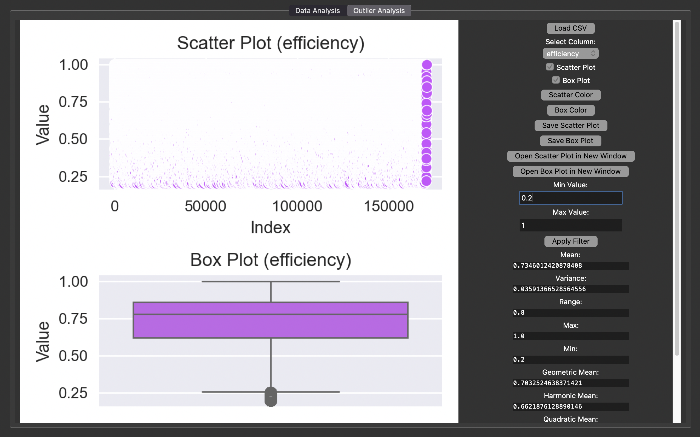
PBDA
PBDA - Preliminary Big Data Analysis Программа на питоне с графическим интерфейсом, предназначенная для быстрого предварительного анализа больших данных
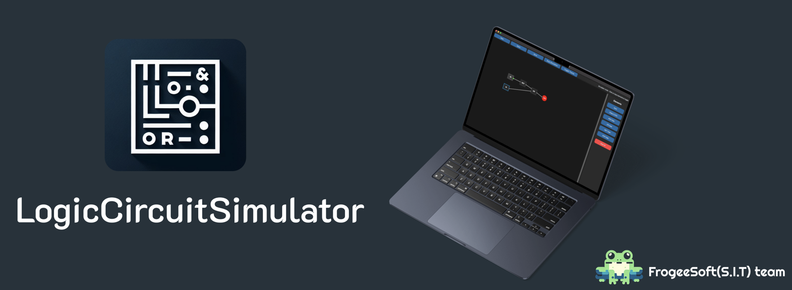
LogicCircuitSmmulator
Проект в рамказх которого мы реализуем собственный симулятор логических схем, с перспективой разработки эмуоятора ПЛИС для микроконтроллеров, что в свою очередь помощет создавать логические микросхемы
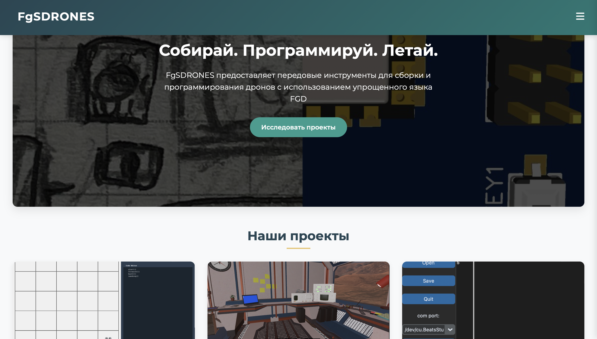
FGsDrones
FrogeeSoft Drones Проект FGsDrones предназначен для сборки и программирования дронов. Основным инструментом является язык программирования FGD (упрощенная версия FroggeeScript). Это простой полётный контроллер, который можно программировать на этом скриптовом языке, а также управлять вручную. Он работает на базе ESP32.

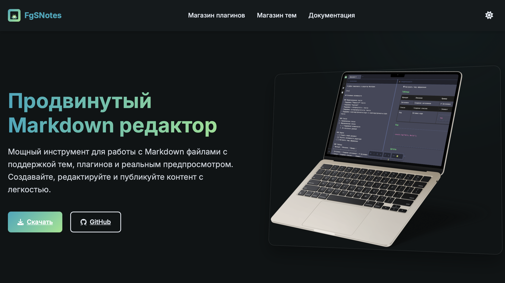
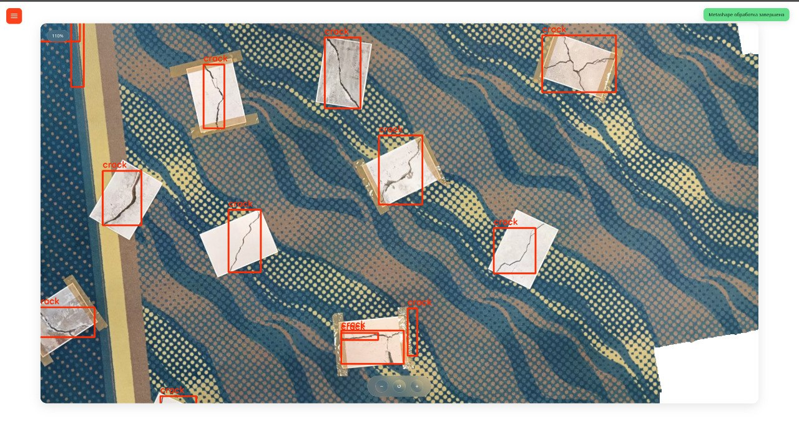
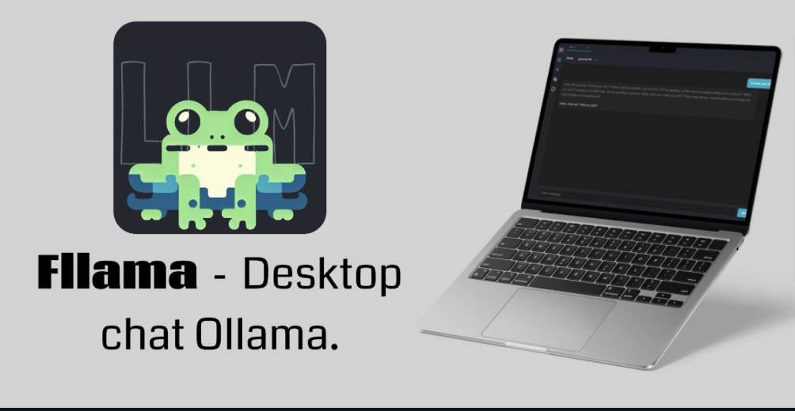
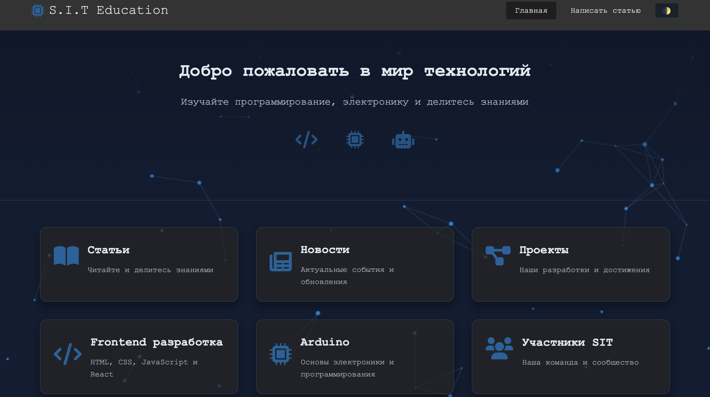
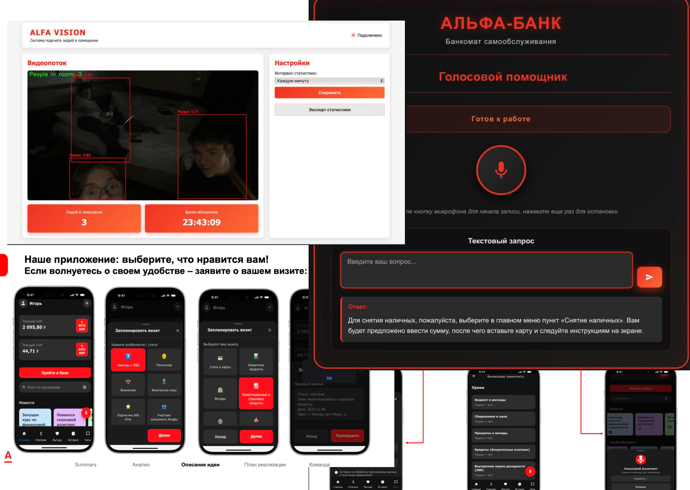
Кейс Альфа-Банка
Решение кейса альфа-банка в рамках которого было разработано:
- Мобильное приложение с обновленной удобной формой записи а также курсами по финансовой грамотности
- Система Alfa-Vision работающая на основе нейросети yolo8l для поиска и подсчета людей в офисе
- Переработан интерфейс для банкоматов, добавлен голосовой ассистент на основее Gigachat+SaluteSpeech API
- Создана системы для тестирования компьтерной техники и сбора всех данных на одном конкретном сервере
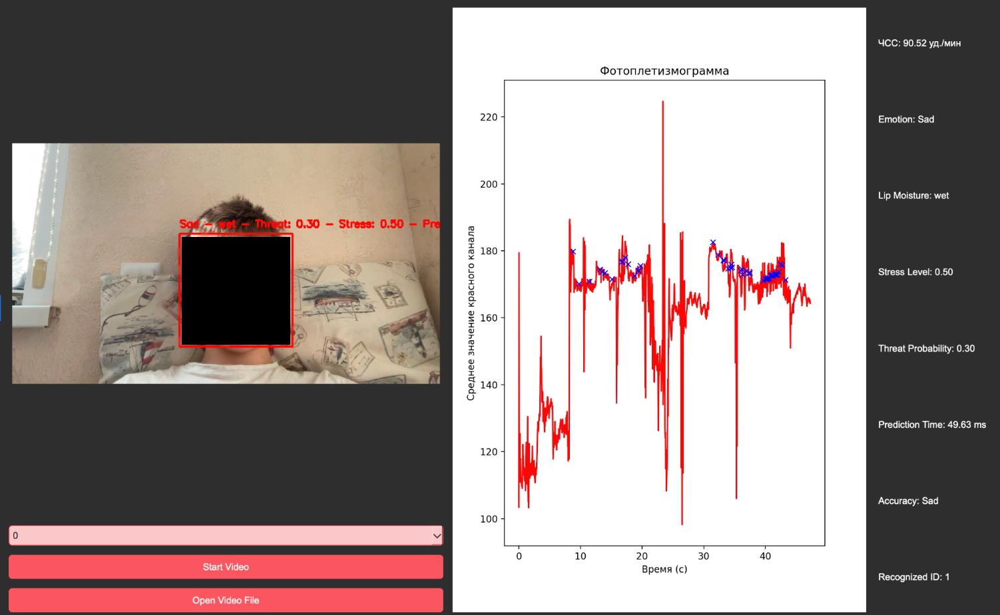
ingT
ingT Программа на питоне с графическим интерфейсом, предназначена для распознавания эмоций, потности лица, ЧСС и индекса подозрительности человека. Работает под управлением 2 нейросетей обуяеных на основе датасета FER2013 и собственного датасета
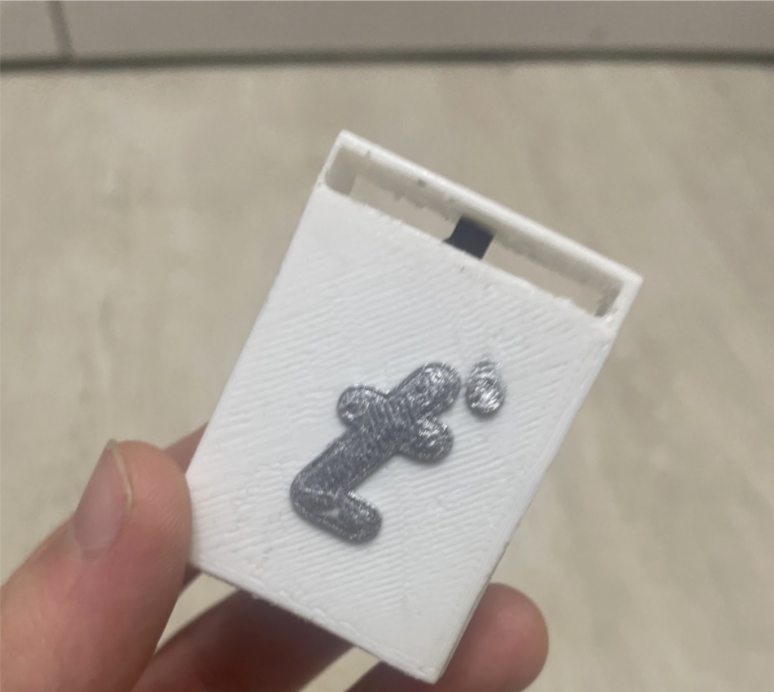
Temperature sensor
Проект по созданию двух версий датчиков температуры, влажности и давления. Работают они под управлением Esp-01(8266)
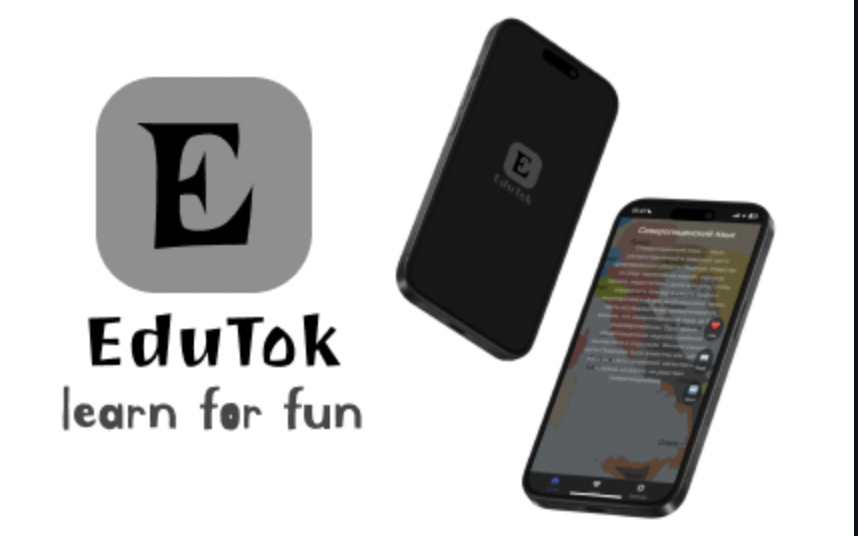
Edutok
EduTock — это веб-приложение, которое предоставляет образовательный контент в коротком и увлекательном формате, вдохновленном такими популярными платформами, как TikTok. Оно позволяет пользователям быстро получать доступ к статьям из различных источников, включая Wikipedia, Habr и наш сайт SITeducation. Платформа создана для того, чтобы сделать обучение интересным и доступным.
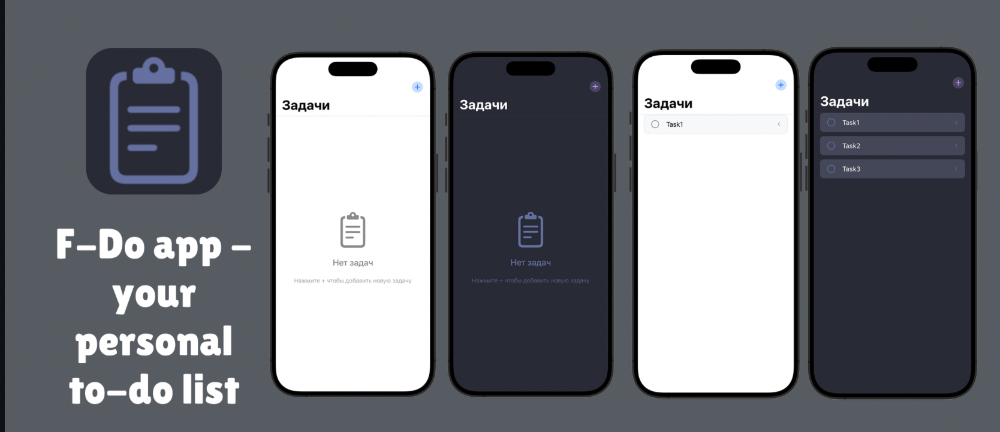
F-Do
Простое приложение для IOS чтобы составлять to-do листы, но с большим заделом на будущее
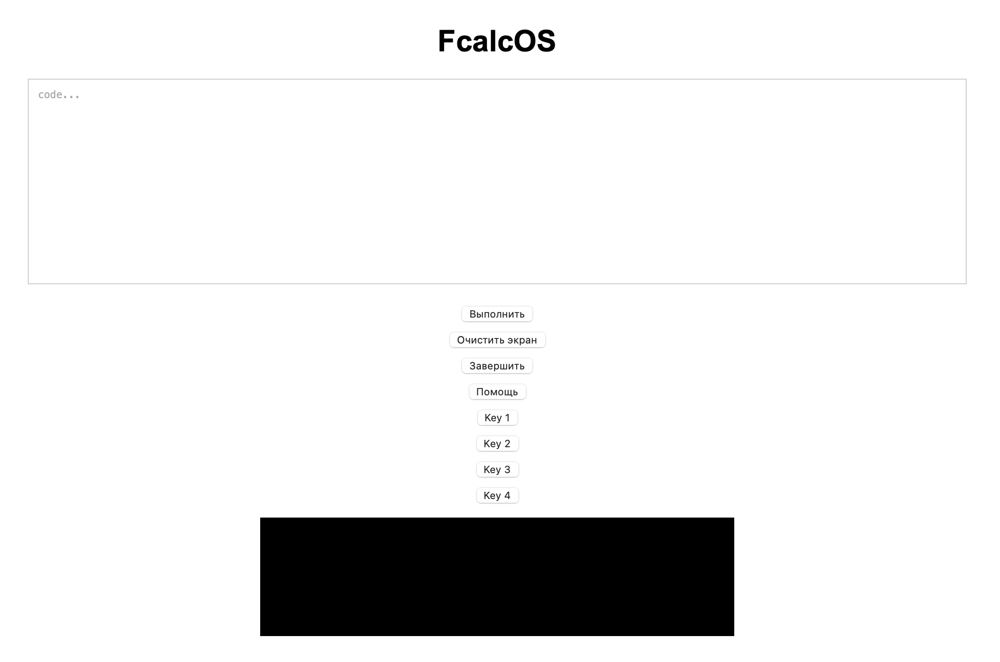
Frogee-Programmble-Calculator
Проект в рамках котрого мы разрабатываем собственный программруемый калькулятор, с интерпритатором собственного Языка программирования.
BikeTripComputer
Разработака собственного простого, нелорого и компактного велокомпьютера на основе stm32
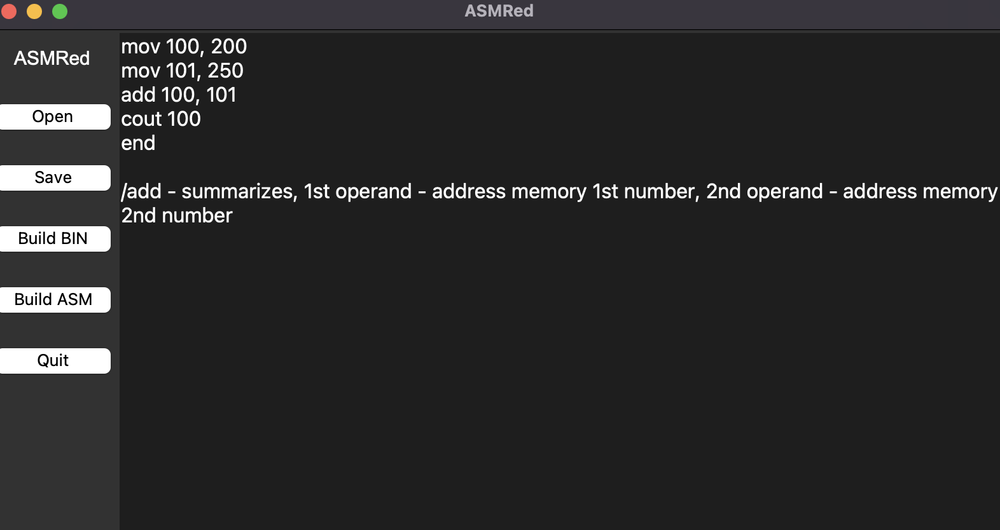
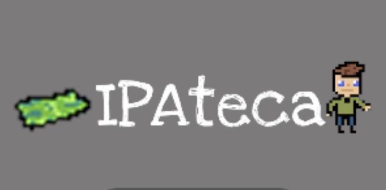
IPAteka
Игра созданая по фану в рамках геймджема ровно за сутки. Сюжет повествует о нелегкой судьбе ВАААААДИИИИМАААААА. Остальное можно узнать на Itch
GennadiyVsCapitalisti
Игра созданая по фану в рамках геймджема менее чем за сутки. Сюжет игры повествует о судьбе Геннадия и его борьбе против капиталистов за булочки СМАК.
m5 cardputer Games
Сборник различных приложений и игр для m5 Cardputer